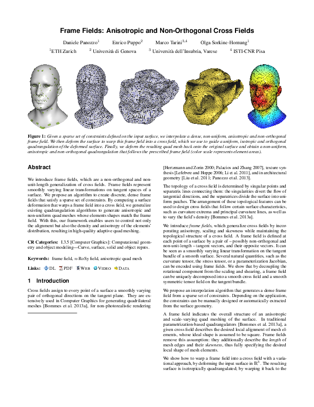

<html><head><meta charset="utf-8"><script src="https://cdn.jsdelivr.net/npm/chart.js@2.8.0"></script>
 <link rel="stylesheet"
       href="http://cdn.jsdelivr.net/gh/highlightjs/cdn-release@9.17.1/build/styles/default.min.css">
 <script src="http://cdn.jsdelivr.net/gh/highlightjs/cdn-release@9.17.1/build/highlight.min.js"></script>
 <script>hljs.initHighlightingOnLoad();</script>
 <link href="../css/all.css" rel="stylesheet">
<link rel="stylesheet" href="../mystyle.css">
<link rel="stylesheet" href="https://cdn.jsdelivr.net/npm/pretty-checkbox@3.0/dist/pretty-checkbox.min.css">
</head>
<body>
 <ul class="publist-inline" style="text-align:left;"><li class="web"><a href="../index.html">< Index</a></ul><h1 class="title">Frame Fields: Anisotropic and Non-Orthogonal Cross Fields <i class="fas fa-circle graphcol1" style="font-size:150%;color:#43a2ca;"></i> <i class="fas fa-square graphcol6"  style="font-size:150%;color:#7570b3;"></i></h1><ul class="authors">
<li> Daniele <span class="family">Panozzo</span></li>
<li> Enrico <span class="family">Puppo</span></li>
<li> Marco <span class="family">Tarini</span></li>
<li> Olga <span class="family">Sorkine-Hornung</span></li>
</ul>
<center> SIGGRAPH 2014</center><ul class="publist-inline">
<li class="web"> <i class="fas fa-globe-americas"></i> <a href="https://doi.org/10.1145/2601097.2601179">ACM</a></li>
<li class="pdf"> <i class="far fa-file-pdf"></i> <a href="http://vcg.isti.cnr.it/Publications/2014/PPTS14/frame-fields.pdf">preprint</a></li>
<li class="web"> <i class="fas fa-globe-americas"></i> <a href="http://vcg.isti.cnr.it/Publications/2014/PPTS14/">Project page</a></li>
<li class="web"> <i class="far fa-file-alt"></i> <a href="http://vcg.isti.cnr.it/Publications/2014/PPTS14/source-code.zip">Code</a></li>
<li class="web"> <i class="far fa-file-alt"></i> <a href="https://github.com/libigl">Code 2</a></li>
<li class="web"> <i class="fas fa-database"></i> <a href="10.1145-2601097.2601179-metadata.json">DOI Metadata</a></li>
</ul>
<center></img></center>
    <hr>
    <div class="row">
    <div class="column2 chart-container" style="position: relative; height:40vh; width:30vw">
    <canvas width="300" height="250" id="myChart" class="chartjs-render-monitor"></canvas>
    </div>
    <div class="column2"><h2>Informations</h2>
    <ul><li><span class="family">Paper topic</span>: Geometry</li>
<li><span class="family">Nature of the artefact</span>: Code</li>
<li><span class="family">Able to run a replicability test</span>: Yes</li>
<li><span class="family">Replicability score</span>: 3</li>
<li><span class="family">License</span>: unspecified</li>
<li><span class="family">Build mechanism</span>: None</li>
<li><span class="family">Mandatory dependencies</span>:Open-source libraries</li>
<li><span class="family">Documentation score</span> {0,1,2}: 1</li>
<li><span class="family">Google Scholar Citation</span> (19/01/2020):   60</li>
<li><span class="family">Reviewer</span>: 2</li>
</ul><h2>Comments</h2><pre>The code provided on the project website consists in a single downloadable main.cpp file. It is unclear if the core implementation is in libigl (mentioned in the includes) or in the main.cpp. To make the main compile, it has to be updated since it relies on a very old libigl :
- replace #include <igl/viewer/Viewer.h> by #include <igl/opengl/glfw/Viewer.h>
- replace #include <igl/comiso/nrosy.h>,  <igl/comiso/miq.h> and <igl/comiso/frame_field.h> by #include <igl/copyleft/comiso/nrosy.h>,  <igl/copyleft/comiso/miq.h>, and <igl/copyleft/comiso/frame_field.h>
- replace igl::Viewer& viewer by igl::opengl::glfw::Viewer& viewer in key_down(..)
- replace igl::Viewer viewer; by igl::opengl::glfw::Viewer viewer; in main()
- replace all viewer.data. by viewer.data(). (24 times)
- replace viewer.core.show_lines by viewer.data().show_lines 
- replace viewer.core.show_texture by viewer.data().show_texture
- replace igl::nrosy, igl::miq and igl::frame_field  by igl::copyleft::comiso::nrosy, igl::copyleft::comiso::miq and igl::copyleft::comiso::frame_field
- replace Eigen::Matrix<char,Eigen::Dynamic,Eigen::Dynamic> texture_R, texture_G, texture_B; by Eigen::Matrix<unsigned char,Eigen::Dynamic,Eigen::Dynamic> texture_R, texture_G, texture_B; (otherwise you get an YOU_MIXED_DIFFERENT_NUMERIC_TYPES__YOU_NEED_TO_USE_THE_CAST_METHOD_OF_MATRIXBASE_TO_CAST_NUMERIC_TYPES_EXPLICITLY error in Eigen) ; you similarly need to change the parameters of line_texture by replacing char with unsigned char.
- add #include <igl/local_basis.h> and #include <igl/rotate_vectors.h>
- *** IGL bug *** : in igl/grad.cpp, in lines 226 and 228, grad_tri and grad_tet should be replaced by igl::grad_tri and igl::grad_tet since they are outside of the namespace.
Since no CMakeList is given, you need to add the following preprocessor directives (tested on Visual Studio 2017) :
- EIGEN_NO_DEPRECATED_WARNING; since Eigen::DynamicSparseMatrix is deprecated (and might just not work in the near future)
- _CRT_SECURE_NO_WARNINGS; _SCL_SECURE_NO_DEPRECATE ; IGL_STATIC_LIBRARY (to prevent linking issues with Comiso), _USE_MATH_DEFINES
- the blas shipped with Eigen should be compiled and linked to the project (it compiles smoothly with the provided CMakeList).
- my list of linked libraries looks like: igl_opengl_glfw.lib;igl_opengl.lib;igl.lib;comiso.lib;igl_comiso.lib;eigen_blas_static.lib;glad.lib;glfw3.lib
- I had to compile it in Multithread (MT), not the default Multithread DLL, due to the way igl is compiled by default (it seems).
Ultimately, I managed to run the provided example. The data is shipped with the IGL tutorial data. This is the only object provided with constraints stored as a dmat file (how can I generate one ?). All the figure results are provided in a separate archive, but without the constraint file, I cannot test whether it works.
I also couldn't get the cross frame to render like in the paper : part of the shape show cross frames over a red mesh (by pressing '1'), but part of the shape remains white with no frames. This might be due to the char -> unsigned char bug fix (?).</pre>
    </div>
    </div>
        <script>

          var ctx = document.getElementById('myChart');
          var myChart = new Chart(ctx, {
              type: 'radar',
              data: {
    labels: ['Dependencies', 'Build / Configure', 'Fixing bugs', 'Easy to adapt', 'Can replicate paper results'],
                     datasets: [{
                      label: 'Build/Run Experience (the higher, the better,  {1..5}, 0=N/A )',
                      backgroundColor: 'rgba(54, 162, 235, 0.3)',
                      borderColor: 'rgb(54, 162, 235)',
                      data: [2,2,2,3,3]
                  }]
              },
              options: {
  scale: {
      ticks: {
          suggestedMin: 0,
          suggestedMax: 5,
          stepSize: 1
      }
  }
}
          });


        </script>
    <br><br>
<br><br><ul class="publist-inline" style="text-align:left;font-size:110%"><li > <i ></i> <a href="replicability.json">Download complete data for this entry</a></li></ul></code></pre></body></html>